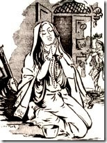

ऐसे ही मौसम में काले बादल छाये हुए हैं और डरी हुई मीरां बाई अपने स्याम को याद कर रही है, देखिये ज्यूथिका रॉय कितने विकल स्वर में गा रही है, बादल देखी डरी हो स्याम, बादल देखी डरी!! मानो खुद मीरा बाई ही गाकर अपने स्याम को याद कर रही है। ज्यू्थिका रॉय को ऐसे ही थोड़े ही ना आधुनिक मीरा बाई कहा जाता था!

आप ध्यान से सुनेंगे तो आपको यूं अहसास होने लगेगा मानों बाहर वर्षा हो रही है और मीरा बाई गा रही है; और अगर काले बादल छाये हुए हैं, और तेज वर्षा हो रही है, तो इस गीत को सुनने का इससे बढ़िया कोई दूसरा अवसर हो ही नहीं सकता।
External player or recording not archived. Original media link
बादल देख डरी हो, स्याम, मैं बादल देख डरी ।
श्याम मैं बादल देख डरी
काली-पीली घटा उमंडी बरसे एक धरी ।
जित जाऊं सब पाणी ही पाणी, हुई सब भोम हरी ॥
बादल देखी डरी..
जाके पिया परदेस बसत है भीजे बाहर खरी ।
मीरा के प्रभु गिरधर नागर कीजो प्रीत खरी ।
श्याम मैं बादल देख डरी ।
संगीत - कमल दासगुप्ता
बादल देखी डरी